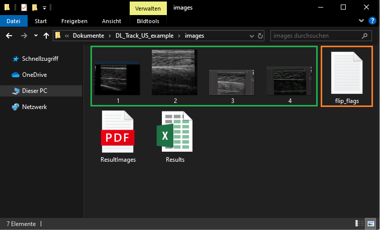
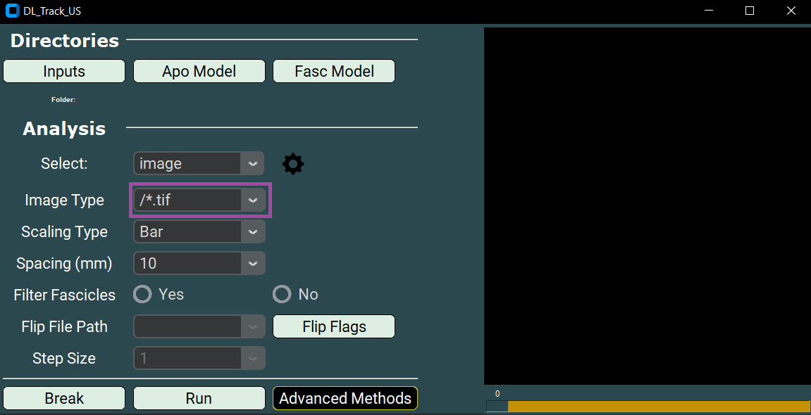
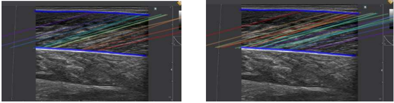
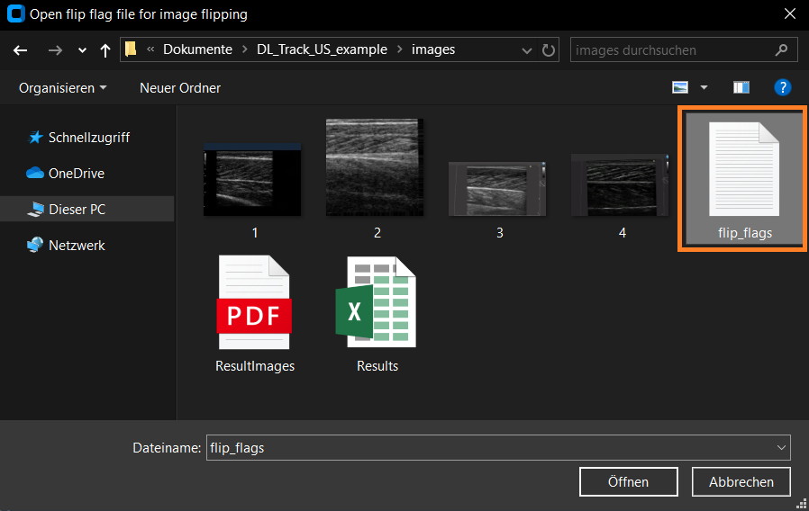
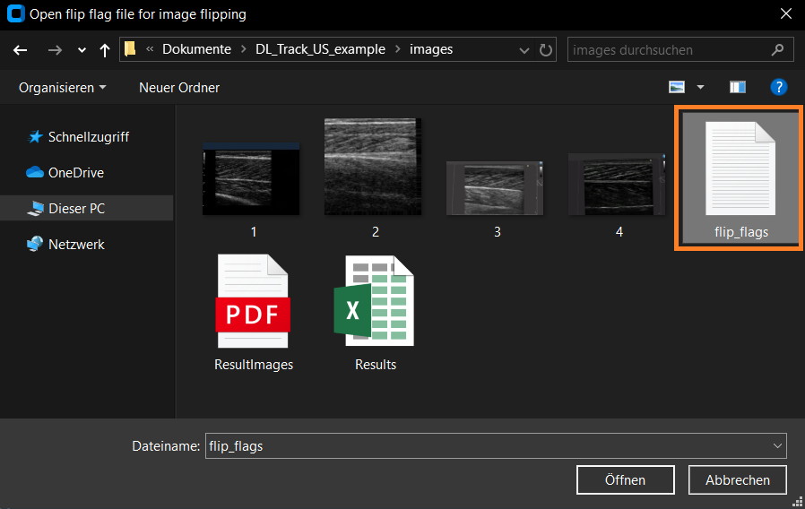
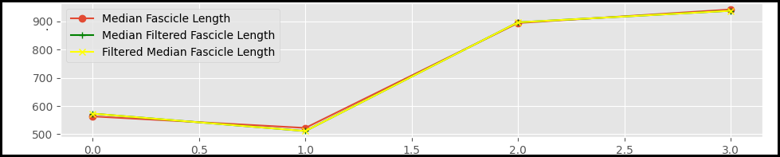

🖼 Automated Image Analysis¶
On this page, you will learn how to perform automated image analysis with DL_Track_US.
The images are evaluated without user input and can be scaled.
Scaling ensures that estimated muscle architectural parameters are converted into centimetre units.
Important: This type of analysis works only for single images, not videos.
All images must be contained in a single folder, for example:
DL_Track_US_example/images.
If you have not downloaded the example dataset yet, please do so now:
DL_Track_US - Examples & Models.
📦 Unzip the folder and save it somewhere easily accessible.
1. Creating Image Directory & FlipFlag.txt File¶
- All images you want to analyze must be placed in one folder.
- The folder
DL_Track_US_example/imagescontains 4 images and a flip_flag.txt file. - It is not required to have the
flip_flag.txtfile in the same folder as the images, but it is convenient.

Let's take a closer look at the flip_flag.txt file:
- For each image, there must be a corresponding flip-flag.
- The flip-flag determines whether an image should be flipped during analysis:
0= no flip1= flip the image
- If the number of flip-flags and images does not match, an error will be raised.

When using multiple subfolders, the flip-flag file format looks like this:

- None of the example images must be flipped — their fascicle orientation is already correct, with fascicles originating at the bottom left and inserting at the top right.
- Below is a visual representation of the correct fascicle orientation.
If your fascicles are oriented differently, please specify a1flip-flag for those images.

2. Specifying Input Directories in the GUI¶
Once the GUI is opened, the first step of every analysis in DL_Track_US is to specify the input directories.
- First, specify the path to the folder containing the images to be analysed.
Remember, this was the folderDL_Track_US_example/images.- Click the Inputs button. A selection window opens where you can select the folder.
- Click Select folder to confirm your choice.


- Second, specify the absolute path to the aponeurosis neural network.
This is located in theDL_Track_US_example/DL_Track_US_modelsfolder.- Click the Apo Model button to open a selection window.
- Select the aponeurosis model and click Open.


- Third, specify the absolute path to the fascicle neural network (also located in
DL_Track_US_example/DL_Track_US_models).- Click the Fasc Model button to select the fascicle model.
- Confirm by clicking Open.


In the next step, you will specify all relevant analysis parameters, including the analysis type.
We will explain what each parameter controls.
3. Specifying Analysis Parameters¶
As a first step, select the correct analysis type in the GUI:
- Select image in the dropdown menu.

Next, you need to specify the Image Type.
- The ending of the Image Type must match the ending of your input images — otherwise no files will be found.
- You can either select a pre-specified ending from the dropdown list or type in your own.
- Please keep the formatting similar to the provided examples.
- In the
DL_Track_US_example/imagesfolder, the images are of type “/*.tif”.

Then, specify the Scaling Type.
- Scaling converts measurements from pixels to centimetres.
- There are three scaling types available:
- None (no scaling),
- Bar (based on visible scaling bars),
- Manual (manual point selection).
For this tutorial, select None.

If you choose the Bar Scaling Type:
- This method works if clear scaling bars are present in your ultrasound image (usually on the right side).
- The bars do not need to be identical to the example, but they must be clearly separated and visible.

- We recommend testing the Bar Scaling Type on a small sample of your images first.
- Files that cannot be analysed with this scaling method will be listed in a
failed_images.txtinside your input folder.
If you choose the Manual Scaling Type:
- You must manually place two points on the image at a known distance.
- Click the Calibrate button to begin manual calibration.

- Click once with the left mouse button to set the first point (a red dot will appear).
- Place the second point according to the real-world distance (5, 10, 15, or 20 mm).
- Afterwards, click Confirm.

- A message box will appear showing the corresponding pixel distance.

Regardless of scaling type, whenever you use Bar or Manual scaling:
- You must also set the Spacing parameter.
- Select 5, 10, 15, or 20 millimetres from the dropdown.
For this tutorial, the Spacing parameter is not necessary since scaling is set to None.

Another setting is the Filter Fascicle option:
- You can choose YES or NO.
- If set to YES, all fascicles that overlap are removed during post-processing.

Below you can see examples of the results with and without fascicle filtering:

As the next step, specify the path to the flip_flag.txt file:
- Click the Flip Flags button.
- Select the flip_flag.txt file, located in the
DL_Track_US_example/imagesfolder. - Ensure that the number of flip flags matches the number of images.
 

4. Adjusting Settings¶
As a last step before starting the analysis, you need to adjust the settings used by the aponeurosis and fascicle neural networks.
-
Click the settings wheel button in the GUI.
This will open thesettings.pyfile in your default text editor. -
The
settings.txtfile contains a dictionary of all relevant analysis parameters. - Default values are listed, and each parameter is explained at the top of the file.


Key parameters explained:
-
Aponeurosis detection threshold:
Minimum probability a pixel must reach to be classified as aponeurosis.
Lower values include more pixels. -
Aponeurosis length threshold:
Minimum or maximum length of structures detected as aponeuroses. -
Fascicle detection threshold and fascicle length threshold:
Same as above, but for fascicles. -
Minimal muscle width:
Minimum distance between superficial and deep aponeuroses. -
Minimal and Maximal Pennation angles:
Range of physiologically possible pennation angles for the muscle. -
Fascicle calculation method:
Method used to calculate fascicle length.
Options:linear_extrapolationcurve_polyfittingcurve_connect_linearcurve_connect_polyorientation_map
-
Fascicle contour tolerance:
Minimum acceptable fascicle length. Lower values allow shorter segments. -
Aponeurosis distance tolerance:
Maximal allowed distance from fascicles to aponeuroses for valid measurements. -
Selected filter:
Method used to filter outliers from fascicle length and pennation angle data.
Options:
1. `hampel` (default)
2. `median`
3. `gaussian`
4. `savitzky_golay`
-
Hampel window size:
Number of data points considered during outlier detection. -
Hampel number of deviations:
Number of standard deviations for outlier detection. -
Segmentation mode:
none➔ images are segmented separatelystacked➔ three frames are stacked (used for videos only)
💡 Tip:
Adapt these parameters according to your images or videos!
Correct parameter settings can greatly impact your analysis results.For future analyses, always test parameter settings on a small sample of your data first. Especially, choose a pennation angle range that is physiologically plausible with a minimum range.
If you accidentally disrupt the
settings.txtfile, there is a backup available:_backup_settings.py.
5. Running / Breaking DL_Track_US¶
After completing all setup steps, you are ready to start the analysis.
- Click the Run button in the main GUI window to begin processing.
- You will also see a Break button in the GUI.
- Clicking Break allows you to stop the analysis at any time.
- The currently processed image will be completed,
- Then the analysis will terminate gracefully.

Once the analysis runs successfully, the results are displayed as a line graph showing:
- Median Fascicle Length
- Median Filtered Fascicle Length
- Filtered Median Fascicle Length

Two output files will be created inside the DL_Track_US_example/images folder:
- ResultImages.pdf:
- A multi-page PDF.
-
Each page shows an input image with predicted fascicles and aponeuroses drawn over it.
-
Results.xlsx:
- An Excel file containing the estimated architectural parameters for each image.
- Each row corresponds to an input image.
- Median fascicle length, median pennation angle, and calculated muscle thickness are provided.
📄 Important:
TheResultImages.pdfcan only be opened once theResults.xlsxhas been fully generated.

🎉 Congratulations! You have now completed the DL_Track_US tutorial for automated image analysis!
Before finishing, it is important to review the error handling procedures in case something unexpected occurs.
6. Error Handling¶
During analysis, DL_Track_US has robust error handling to ensure you can identify and correct problems easily.
Whenever an error occurs:
- A message box will open inside the GUI.
- It will explain what went wrong and suggest how to fix it.
Example of an error message:

We have tried to make all error messages as concise and informative as possible.
Simply follow the instructions in the error box and restart the analysis after resolving the issue.
💬 Note:
If an unexpected error occurs that is not caught by a message box,
please report it in the DL_Track_US Discussion Forum - Q&A Section.
When reporting an issue:
- Please include a description of the problem,
- Steps to reproduce the issue,
- And (if possible) screenshots of the GUI and error message.
By following these guidelines, we can continuously improve DL_Track_US.